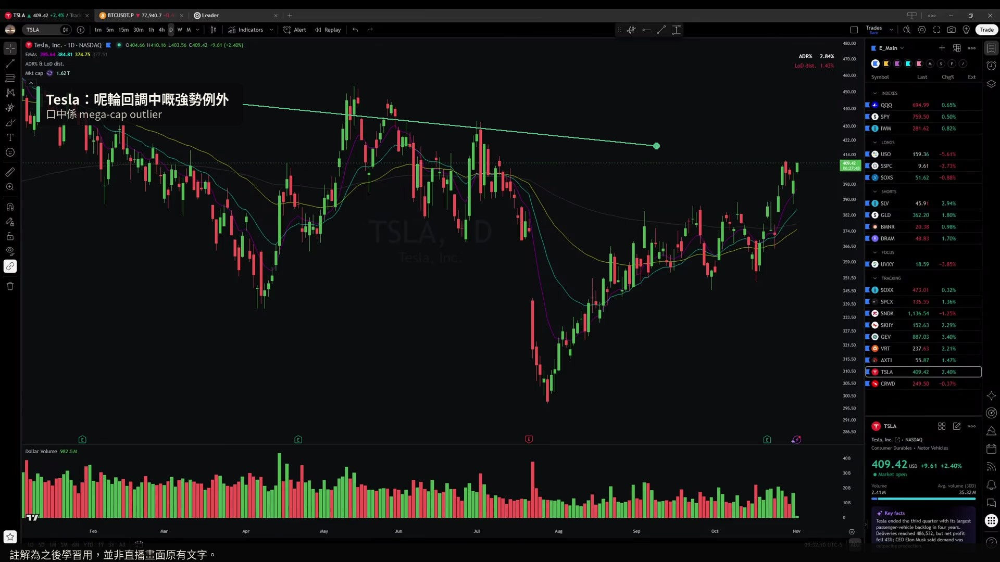
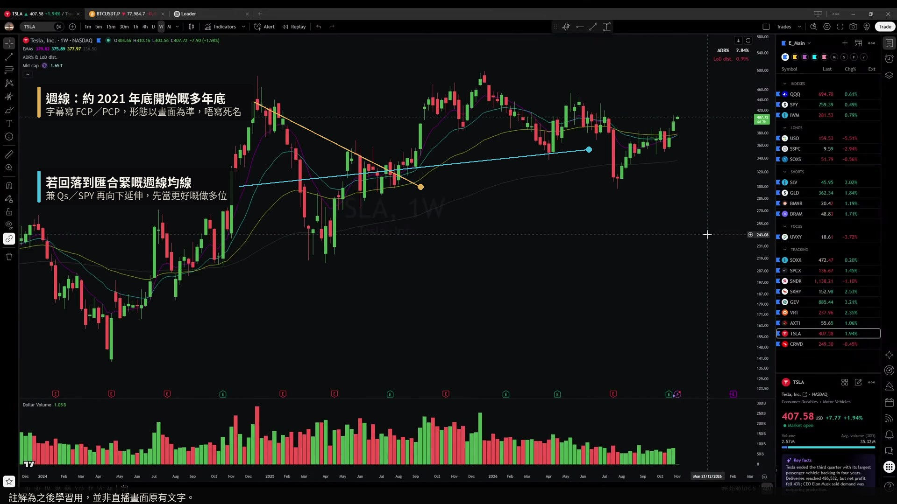

概要
先肯定相對強勢，再講更好嘅位置仍在下面
1:20:16 佢話呢隻係過去幾週回調裡嘅例外、表現很好，並且仍在整一個多年底，由 2021 年底左右開始。若可以回落到呢啲正在匯合嘅週線均線，同時大市亦弱、Qs 同 SPY 向下延伸，Tesla 又回落到呢啲均線，佢覺得先係很好嘅做多位置。字幕寫 FCP 或者 PCP，形態以畫面為準，本站唔寫死型態名稱。開場 16:05 已把 Tesla 列作 potential long，當時未出示 Tesla 圖，本頁先補上完整走圖。
圖一
Tesla：呢輪回調中嘅強勢例外
直播 1:20:30

原話
This is just the outlier, the mega-cap outlier in the past few weeks, has been doing an amazing job on this market pullback. And it's also still building like a FCP type of base, is like a five-year base from late 2021.
呢隻只係例外，過去幾週裡嘅 mega-cap 例外，在呢段市場回調裡表現很好。而且仍在整一種底，好似由 2021 年底開始嘅五年底。
字幕寫 “metal cap / FCP / PCP”；mega-cap 同畫面結構以圖為準，型態名稱唔寫死。
點樣讀
日線用來說明相對強勢。多年底同更好入場，要用週線一齊讀。
圖二 · 主圖
週線多年底；更好位置在匯合均線之下
直播 1:21:00

原話
If we can get a pull back into this converging weekly EMAs together with the market weakness. So when the Qs is going down, SPY is going down, getting extended to the downside and Tesla is pulling back into these EMAs, I think it would be a very good long entries down here.
若我哋可以回落到呢啲正在匯合嘅週線均線，同時又有大市轉弱。即係當 Qs 向下、SPY 向下、向下延伸，而 Tesla 又回落到呢啲均線，我覺得下面先會係很好嘅做多位置。
點樣讀
相對強勢唔等於而家就做多。更好嘅位置，係價格回到匯合緊嘅週線均線，並且指數都向下延伸。呢句係位置條件，唔係即場叫買。
字幕把型態叫做 FCP／PCP，本站只描述畫面：多年底同均線匯合，唔寫死型態名稱。
附註
注意事項
- 16:05 已把 Tesla 列作 potential long，當時未出示 Tesla 圖。型態名稱以畫面為準，唔寫死。
- 畫面睇唔到成交價或者倉位。
免責聲明：呢份係教育拆解，唔係投資建議，亦唔好當作買賣指示。